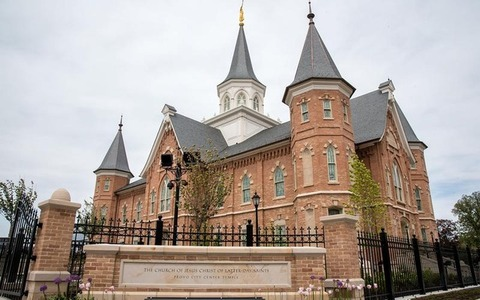

Temple Album
Home
Old
New
Large
Small
Home
Oakland California Temple
Laie Hawaii Temple
Sacramento California Temple
Salt Lake Utah Temple
Brigham City Utah Temple

Provo City Center Temple
Payson Utah Temple
Nauvoo Illinois Temple
Rome Italy Temple